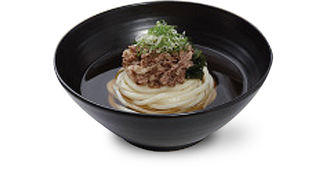

- 제일 우동면/소면 Hot Noodle with Korean Dried Anchovy Broth
-

- 7,500원
-

엄선된 다시마와 훈연 가다랑어포 등으로 매일 아침 정성껏 우려내어 깊고 풍부한 국물과 유부 고명을 함께 맛 볼 수 있는 메뉴
- 잔치 소면/쌀면 Hot Noodle with Korean Dried Anchovy Broth
-
- 8,000원
-

남해 멸치로 우려내어 개운하고 담백한 국물과 오방색으로 어우러진 고명을 곁들여 함께 맛 볼 수 있는 메뉴
- 차돌박이우동면/쌀면 Hot Noodle with Selected Seaweed & Smoked Tuna Broth, Topped with Beef Brisket
-
- 9,800원
-

매일 아침 정성껏 우려낸 국물과 간장소스로 맛을 낸 차돌박이, 완도산 미역이 잘 어우러진 깊고 진한 맛의 메뉴
- 쟁반우동면/메밀면 Cold Noodle with Specialized Dipping Sauce
- 7,500원
-

훈연 가다랑어포로 맛을 낸 메밀 소스에 무, 고추냉이 등을 곁들여 차가운 면을 담궈 즐기는 메뉴
- 비빔소면/메밀면 Cold Noodle with Red Pepper Sauce and Dried Pollack
- 8,000원
-

새콤달콤한 양념장과 매장에서 직접 숙성해 만든 명태초무침을 함께 곁들여 즐기는 메뉴
- 동치미소면/메밀면 Cold Noodle with Radish Water Kimchi
- 9,800원
-

투명한 살얼음이 가득해 시원하고, 동치미 육수의 깔끔함과 감칠맛이 일품인 메뉴
※ 면 추가 2,000원 /150g


신선한 야채와 고기를 함께 즐기는 특선 메뉴
(특선 메뉴는 1인부터 주문 가능합니다.)
- 쇠고기 샤브샤브 + 제일 쌈밥 Beef Shabu Shabu served with Fresh Vegetables and Dipping Sauce
- 20,000 (1인)원
-

풍부하고 담백한 우동 국물에 신선한 야채와 쇠고기를 살짝 익혀 먹는 메뉴

- 매콤 순살 닭튀김 Deep Fried Spicy Chicken
- 15,000원
-

매콤한 고추향이 부드러운 닭다리살과 잘 어우러진 닭튀김
- 삼겹살 부추 볶음Stir-Fried Pork Belly with Korean Chives
- 16,000원
-

돼지고기 삼겹살과 부추를 짭조름한 간장소스에 볶아낸 요리
- 모둠 우동 전골Assorted Udon Stew
- 24,000원
-

깊은 맛을 자랑하는 제일 육수에 야채와 고기, 새우튀김과 탱글탱글한 ‘자가제면’ 우동면을 한번에 즐길 수 있는 메뉴
※ 오후 5시 이후에 주문이 가능합니다.

- Break Time 16:30 ~ 17:00
- 회전식 샤브샤브는 해당좌석에서만 이용하실 수 있습니다.
- ‘쇠고기 냄비자작’으로도 이용 가능하십니다.